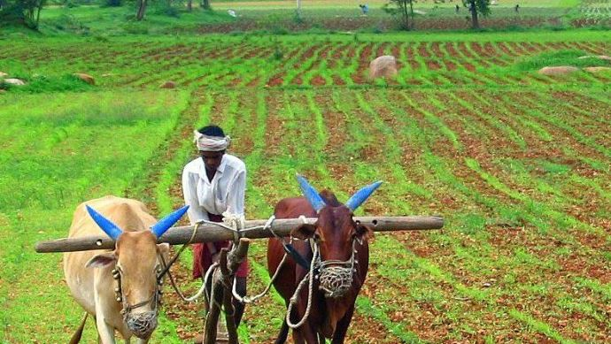
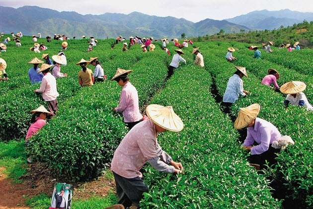
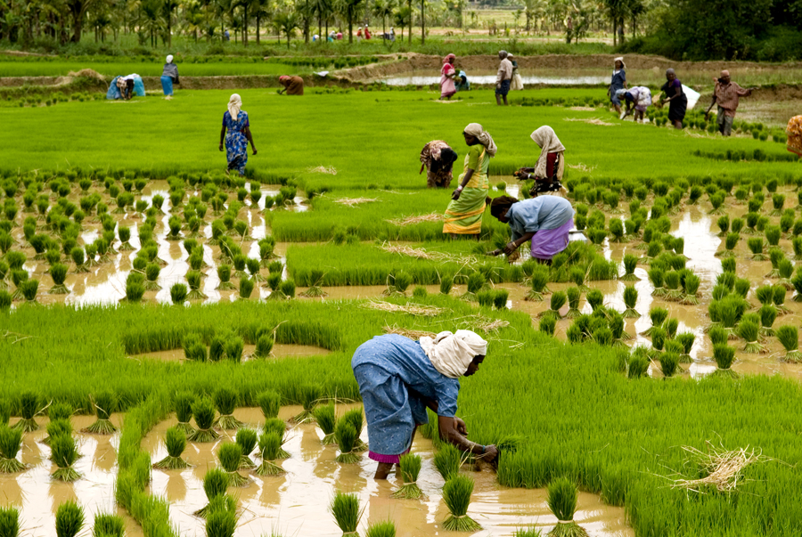
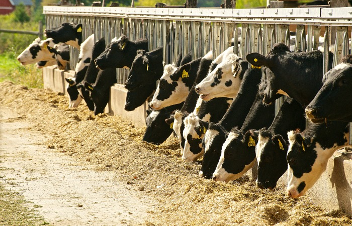

The activity or business of growing crops and raising livestock is called as "farming".India is one of the farming dependent country.Farming includes both agriculture and raising livestock(like hen,cows,sheep etc..).Farming can be classified to two major categeories.They are Subsistance farming and Commercial farming.
With increases in both human and animal populations in the Indian arid zone, the demand for grain, fodder, and fuel wood is increasing. Agricultural production in this region is low due to the low and uneven distribution of rainfall (100–400 mm yr"1) and the low availability of essential mineral nutrients. These demands can be met only by increasing production levels of these Aridisols through adoption of farming technologies that improve physical properties as well as biological processes of these soils. Alternate farming systems are being sought for higher sustainable crop production at low input levels and to protect the soils from further degradation.

This extensive commercial system is characterized by cultivation of a single cash crop in plantations of estates on a large scale. Because it is a capital centered system, it is important to be technically advanced and have efficient methods of cultivation and tools including fertilizers and irrigation and transport facilities. Examples of this type of farming are the tea plantations in Assam and West Bengal, the coffee plantations in Karnataka, Kerala, and Tamil Nadu, and the rubber plantations in Kerala and Maharashtra.

In 2001 India became the world leader in milk production with a production volume of 84 million tons. India has about three times as many dairy animals as the USA, which produces around 75 million tons. Dairy Farming is generally a type of subsistence farming system in India, especially in Haryana, the major producer of milk in the country. More than 40% of Indian farming households are engaged in milk production because it is a livestock enterprise in which they can engage with relative ease to improve their livelihoods. Regular milk sales allow them to move from subsistence to earning a market-based income.

Co-operative farming refers to pooling of farming resources such as fertilisers, pesticides, farming equipments such as tractors. It however generally excludes pooling of land unlike in collective farming where pooling of land is also done. Co-operative farming is a relatively new system in India. Its goal is to bring together all of the land resources of farmers in such an organised and united way so that they will be collectively in a position to grow crops on every bit of land to the best of the fertility of the land. This system has become an essential feature of India's Five Year Plans.
